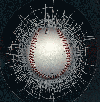

<!-- root element for everything -->
<!--<div id="scroll">

	 scrollable items 
	<div id="tools">
				
		 tabs 
		<div class="tool">

			<h2><span>welcome</span> to Pitch<span>Predict</span></h2>
			
			<p>
				<br>
				<br>"People ask me what I do in winter when there's no baseball.  I'll tell you what I do.  I stare out the window and wait for spring."
				<br>  ~Rogers Hornsby
			</p>

		</div>
                
		<div class="tool">
			<h2>Pitch<span>Predict</span></h2>
			
			<p>
				PitchPredict is an assortment of tools aimed at aiding decision making.  It introduces new techniques and analyzes the Gameday Pitch f/x XML in a new and interesting way.
			</p>
		</div>
		<div class="tool">

		</div>
		<div class="tool">

		</div>
		<div class="tool">
			<h2>the<span>Roadmap</span></h2>
			
			<p>
				You have seen the prototype but where do we go from here?  Well, glad you asked because we have ideas on top of ideas and each one builds on the other.  To start with we can add some more bells and whistles and make the tool more user friendly.  We can create a mobile app so that teams, coaches, players, and scouts can use PitchPredict anywhere.  We can expand PitchPredict to include minor league data.  We can make the tool more generalized to add the ability to analyze a broader set of situations.  And once we have completed all that?  Well, then we can start developing the really clever capabilities of PitchPredict.  We can develop algorithms that will optimize a pitchers approach to attacking a particular batter in a particular situation.  We can develop algorithms to compare pitchers and hitters across the different leagues.  These algorithms would be able to look at not just a players "stats" but also take into consideration a players "DNA".  We can look at how a play responds in certain situations and compare those responses to those of a successful major leaguer.  Could you imagine if you could identify a single A pitcher who responds to most situations the same way Nolan Ryan, or Roger Clemens, or Andy Pettite would have?  This is the future of sabermetrics.  This is the future of baseball.  This is PitchPredict!
			</p>
		</div>

	</div>

	 required for IE6/IE7 

	<br clear="all" />

	 thumbnails 
	<div id="indexthumbs" class="indext">

		 scrollable navigator root element 
		<div class="navi">
		
			<a class="active">Welcome</a>
			<a>What is it?</a>
			<a>Hot Zones</a>
		        <a>Charts</a> 
		        <a>Future</a> 
	
		</div>
	</div>

</div>-->

<!-- activate demo with JavaScript -->
<!--<script>
// initialize scrollable and return the programming API
var api = jQuery("#scroll").scrollable({
	items: '#tools',
	size: 1,
	clickable: false

// use the navigator plugin
}).navigator({api: true});
</script>-->
<!--<iframe src="https://docs.google.com/presentation/embed?id=1NbNESqiOyIsMbDx6jFBu2msyWfqg2hbNtvoUsvViBgY&start=false&loop=false&delayms=3000" frameborder="0" width="900" height="575" allowfullscreen="true" mozallowfullscreen="true" webkitallowfullscreen="true"></iframe>-->